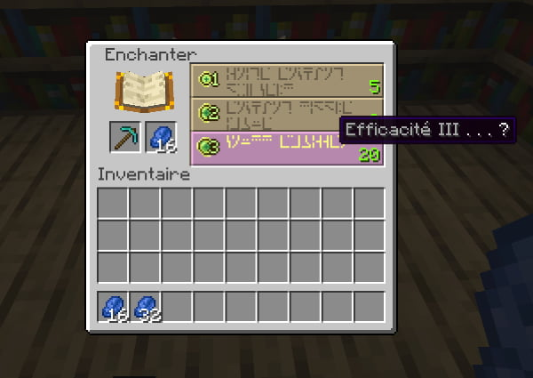
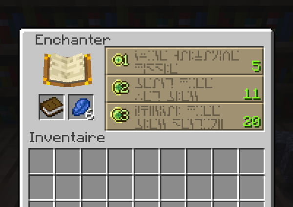
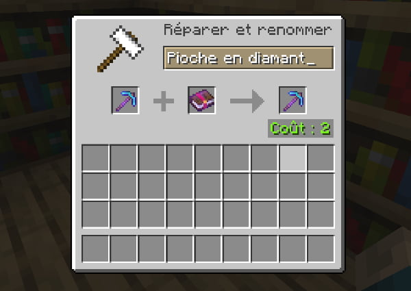

Pour enchanter un outil ou une pièce d'armure il faut une table d'enchantement.
Mettez votre outil ou pièce d'armure dans le premier emplacement et du lapis-lazulis dans l'autre, il vous faudra aussi de l'XP : plus votre enchantement sera fort plus vous aurez besoin d'XP.
Vous pouvez débloquer des enchantements plus forts en ajoutant des bilbliothèques a 1 bloc de distance de la table, le maximum est de 15. Mettez les en rond sur 2 blocs de hauteur. vous pouvez évidemment en mettre plus, mais cela ne sera que décoratif.

Vous pouvez aussi enchanter des livres puis les mettre au outils grâce a l'enclume mais cela coutera plus cher : en effet, il vous faudra de l'XP pour enchanter le livre mais aussi dans l'enclume pour le combiner avec votre outil ou pièce d'armure.
Cependant, cette technique vous permet de combiner différents enchantements précis et ainsi, pour peu que vous ayez de l'XP, de créer un outil ou une pièce d'armure surpuissant. Notez que cette technique vous sera indispensable si vous souhaitez posséder tout les enchantement possible sur votre équipement.
